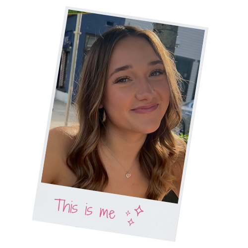
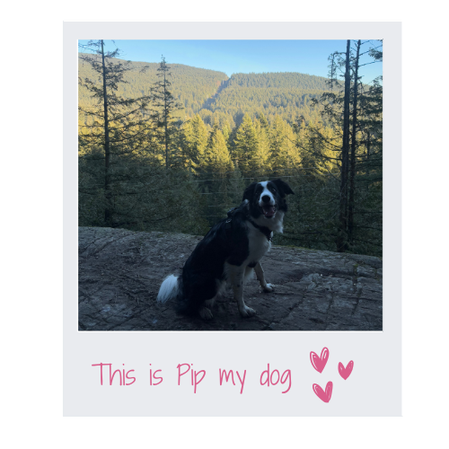

About Me
Hey, I'm Finley! I'm an aspiring visual designer diving headfirst into the world of UX/UI. I love making things that not only look good but also make sense for people. Think of me as someone who brings a real, honest approach to problem-solving – I put in the work and I care about getting it right. I'm all about teamwork, thinking critically, and putting users first. Empathy and clear communication are my superpowers, and I always want to create designs that inspire and make a positive impact.
- 
- 
What Guides My Creative Process
Designing for People
I’m passionate about creating simple, intuitive designs that solve real problems and make life easier.
Collaboration is Key
I thrive on teamwork and feedback—it helps me refine ideas and create better solutions.
To Innovate
I believe great design comes from testing, tweaking, and improving until it works beautifully.
Creativity with Purpose
I balance creativity and functionality to create experiences that look great and truly deliver.